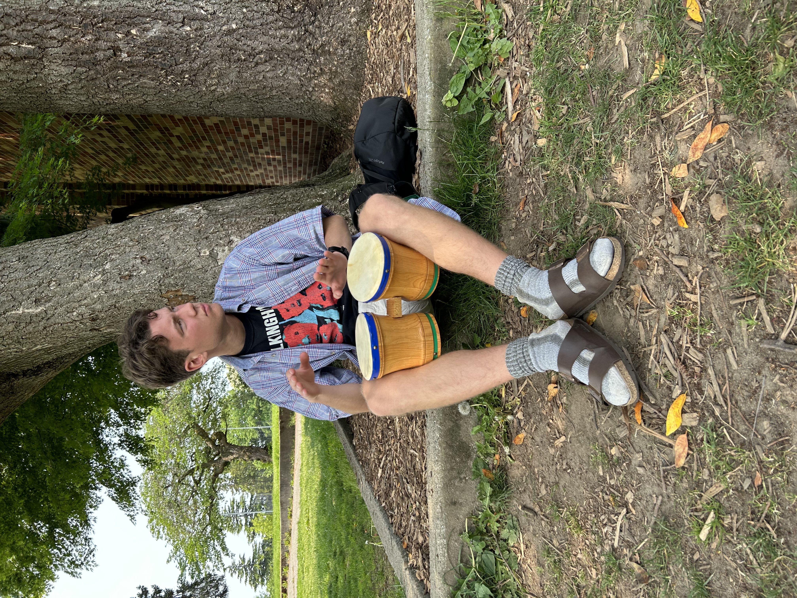

He / Him · Seattle, Washington
Third-year undergraduate at the University of Washington pursuing a BS in Physics and Astronomy and a BA in Philosophy.
My research focuses on identifying structures that can serve as laboratories to test ΛCDM's predictions about structure formation. I'm interested in doing cosmology with both individual observations and large survey data. Applying to graduate programs Autumn 2026!

Seeking to characterize stellar streams using large survey data. Built a computational framework to efficiently filter massive datasets, enabling scalable study of Milky Way substructure. Created exhaustive catalogs of likely stream members. Aided in DELVE observations. Project details available here!
Developed an image reduction pipeline and performed spectroscopy on dwarf galaxies. Conducted on-site observations at Cerro Tololo Inter-American Observatory near La Serena, Chile. Project details available here!
Remotely observed for the Local Volume Mapper, a flagship survey of the interstellar medium conducted as part of the Sloan Digital Sky Survey (SDSS-V).
Investigated a novel method of sensor noise reduction for electro- and magneto-encephalography (EEG/MEG) projects using signal processing in Python.
Sep 2023 – Jun 2027
BS Physics & Astronomy · BA Philosophy
University of Washington
Dean's List all quarters enrolled. Built observing experience through ASTR 480 (ARCSAT 0.5m at Apache Point), ASTR 481 abroad in Croatia (Višnjan Observatory), and at the Manastash Ridge Observatory. Conducted field research with Paz y Esperanza Perú in Lima and San Martín region for disability, indigenous, and women's rights advocacy.
Mar 2025 – Present
Reader / Grader
University of Washington
Graded for Astronomy 321 (Solar System) Spring 2025 & Spring 2026, and Philosophy 120 (Logic) Autumn 2025.